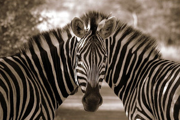

Небольшая заметка о том, как теория биологической эволюции как отрасль знаний комбинирует два научных подхода. О том, как эти два подхода различаются с методологической точки зрения и какие объективные ограничения присущи им. И наконец, о том, как эти различия влияют на степень доверия к результатам.
Теория эволюции — модель, описывающая развитие живых организмов и появление новых форм живой материи. Как теория она предлагает некоторые механизмы, посредством которых осуществляется образование новых форм. Представление о механизмах изменяется и уточняется с целью более точного описания процесса по мере поступления новых экспериментальных подтверждений.
Собственно, эволюция (в биологическом смысле) — это последовательное изменение и усложнение организации живой материи. Сам термин подразумевает некий прогресс и усложнение с целью адаптации к условиям среды — прогрессивнее тот, кто более адаптирован. Существует ли подобный прогресс?
Если рассматривать шкалу времени протяженностью в месяцы, годы, десятилетия и, возможно, века, то ответ будет доказуемо (в рамках понятий естественно-научного знания) положительным. Помнится, по приезде в одну местность я заметил, как местные бездомные собаки совсем не умели переходить дорогу и часто попадали под машины. Зачастую такой переход через проезжую часть выглядел, как неупорядоченное движение отдельных особей, которые по приближении машины стремглав бросались обратно на тротуар, откуда начинали свое движение. Со временем "техника" перехода через дорогу значительно улучшилась, и собаки стали переходить дорогу вместе с людьми. Картина была замечательная — бездомные псы стоят у пешеходного перехода и ждут зеленого сигнала светофора, с появлением которого начинают двигаться вместе со всеми через проезжую часть. Данный прогресс, закрепившись через 1-2 поколения, очевидно, осуществился на малой шкале времени и был легко наблюдаем. Такая эволюция, или адаптационный прогресс, называется, по понятным причинам, микроэволюцией [1].
Если же рассматривать шкалу, измеряемую сотнями тысяч лет или даже их миллионами, ответ уже выходит из прерогативы естественно-научного знания и становится прерогативой науки исторической. Для большинства научного сообщества, по-видимому, смешение этих двух областей знания и, следовательно, двух в корне отличающихся подходов остается абсолютно незаметным, то есть некоторые выводы базируются на обоих подходах без особого разделения. Характерные особенности двух подходов будут рассмотрены ниже.
Естественно-научный подход основан на понятии "проверяемого свидетельства" (testable evidence). Например, закон тяготения гласит, что яблоко, брошенное в свободном полете с высоты 3 метров, будет падать с определенным ускорением по направлению к центру Земли. Проверить это утверждение можно всегда и везде (на Земле), и каждый может это сделать сколько угодно раз во скольких угодно местах нашей планеты. Возможно предположить, что существует момент времени или место на Земле, при прочих равных условиях, такие, что данное положение будет неверным. Но данное опровергающее утверждение относится к разряду бесполезного с практической точки зрения философствования, хотя и принципиально не может быть отвергнуто [2]. Примечательно, что всего одного лишь опровергающего свидетельства достаточно, чтобы начать пересматривать господствующее воззрение (теорию), по крайней мере, для условий, в которых имело место быть опровергающее свидетельство [3]. На эти положения опирается естествознание.
С другой стороны, историческая наука никогда не имеет дела с проверяемыми свидетельствами. Она всегда справляется с "документами" прошлого для выявления того, что действительно произошло. Другими словами, повторить то, что было, невозможно и необходимо взглянуть на прошлое сквозь призму чьего-то взгляда. В случае с биологической эволюцией мы глядим сквозь призму природы, которая в свою очередь имеет ряд строгих закономерностей. Таким образом, понимание исторических "документов" природы требует понимания самой природы.
Итак, проверяемые свидетельства дают наиболее достоверную информацию о законах природы, так как по сути являются объективно проверяемыми, а также проверяемыми постоянно. Истинное естествознание, основанное только на данном подходе, дает наиболее точную (с необычайно высокой вероятностью) информацию о внешнем мире [4].
Исторические же события представляются наиболее уязвимыми к различного рода интерпретациями и предвзятым мнениям. В итоге, степень доверия/веры в такого рода вопросах варьирует от индивидуума к индивидууму, всегда находясь в зависимости от личных парадигм, стереотипов и жизненного опыта. Стереотипы порой навязываются массово и мы видим, как одни и те же события, даже не столь далекого прошлого современного человечества, интерпретируются по-разному.
Возвращаясь к вопросу о существовании прогресса и усложнения форм на шкале, измеряемой миллионами лет и более, мы обязаны заметить, что принципиальную роль в решении данного вопроса играют: 1) методы оценки и измерения того, что наблюдается в историческом документе; 2) совокупность знаний, накопленных на момент интерпретации (которые в свою очередь также влияют на качество методов измерения); 3) наличие более или менее постоянных условий среды, что также должно быть "записано" в документе, на протяжении временного интервала, на котором предполагается появление эволюционных новшеств.
Методы анализа археологических находок имеют значительные погрешности и также все время совершенствуются, давая все новые и новые оценки и предположения. Одно — смотреть на историю Нового времени, другое — на миллионы и миллиарды лет назад (если вообще туда можно смотреть).
Совокупность знаний напрямую влияет на получение объективной информации об историческом событии. Зачастую исследователи чрезвычайно углублены в свою узкую область и даже не осознают ограничений и законов, налагаемых другими областями. Это — проблема всего современного знания, которое предлагает ученым все более и более сложные формулировки и увеличивающиеся объемы информации, лишь для хранения и обработки которых требуется уйма знаний.
Наличие более или менее одинаковых условий среды является необходимым условием обнаружения прогресса, или эволюции, биологической формы, так как только в неменяющихся условиях среды можно оценить уровень адаптации и, следовательно, провести сравнительный анализ между старыми и новыми формами или функциями живого организма. Вообще, если цель эволюции как прогресса есть адаптация к среде, то в постоянно меняющихся условиях внешней среды оценить "кто лучше, кто хуже" просто не представляется возможным. В то же время, адаптацию обычно оценивают по какому-либо одному фактору среды (полет против ползания, кислородное дыхание против бескислородного и т.д.). Общий же прогресс вида оценить довольно сложно, если не невозможно [5].
В целом, наличие биологического разнообразия живых форм, наличие вымерших форм, усложнение организации, оцененное по постоянным во времени факторам среды, свидетельствуют, вместе взятые, о наличии процесса, направленного на изменение живой материи. Однако, шкала времен, скорость этого процесса и, самое главное, цель и причина изменения остаются из разряда верований и предположений отдельных ученых.
Как итог, подход теории эволюции выходит за рамки чисто естественно-научного метода и использует методологию и принципы исторической науки. Разницу между двумя мы попытались раскрыть в данном очерке. В этом свете, нам видится полезным держать данный аспект биологической теории эволюции в голове каждый раз, когда делаются выводы из некоторых результатов этой области биологии.
[1] Тяжело представить, как подобный прогресс закрепляется в геноме популяции, ведь прогресс достигается сугубо на фенотипическом уровне, то есть нет "гена перехода через дорогу", который потенциально мог бы мутировать для достижения прогресса, даже понятие гена не является до сих пор чем-то определенным и чаще заменяется собирательным "ген" (в кавычках). (Вернее, до недавних пор все были просто уверены, что такое "ген", но время расставило все по своим местам, и больше нет рвущих горло и доказывающих, что такое ген и как с ним работать, хотя есть другие, рвущие горло на чем-то новом.) В том, что фенотип и генотип имеют значительно меньшую связь, чем предполагалось ранее, по-видимому, нет особых сомнений. Ныне даже возвращается концепция "Ламаркизма" в честь автора первой теории эволюции Ж.-Б. Ламарка. Суть теории Ламарка заключалась в том, что эволюция достигается упражнением органов. Конечно, первую теорию эволюции в чистом виде не вернуть, но существенно дополнить существующую вполне возможно. С современным взглядом на генотип и его связь с фенотипом можно познакомиться в книге "Музыка жизни" Д. Нобля ("Music of life", D. Noble) и "Эволюция: взгляд из 21-го века" Дж. Шапиро ("Evolution: a view from the 21-st century", J. Shapiro).
[2] Это известно как проблема индукции — перехода от частного к общему. Например, если солнце всходило каждый день во все времена истории, нет принципиального доказательства того, что оно и завтра взойдет.
[3] На этом основывается, к примеру, эволюционная эпистемология К. Поппера.
[4] С практической точки зрения даже проблема индукции обходится с использованием теоремы Байеса, которая дает вероятностное описания "веры" в теорию или закон. Кратко, чем больше экспериментальных доказательств феномена найдено, тем больше уверенности (веры) в правильность данного феномена. Примечательно, что формулировка теоремы Байеса исходно содержит в себе понятие веры.
[5] Здесь мы опираемся на довольно общее положение. Чтобы что-либо сравнивать, нужно иметь систему отсчета, от которой отталкивается сравнительный анализ. Например, контрольная работа в школе имеет строгий набор критериев, по которым оценивается работа. Если набор критериев неясен, тогда сравнить учеников в классе не представляется возможным.